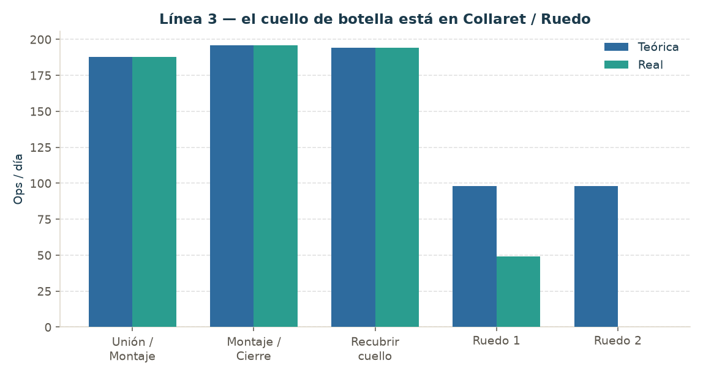
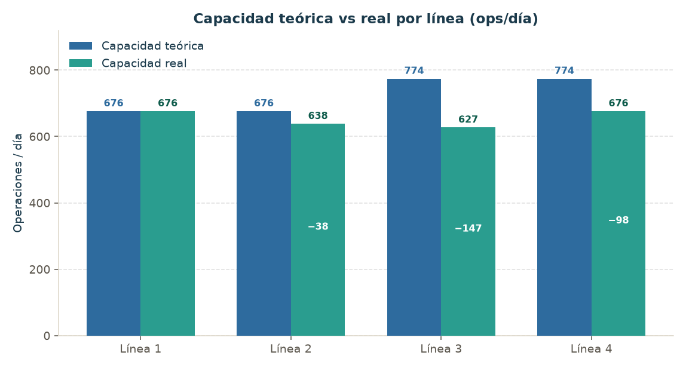
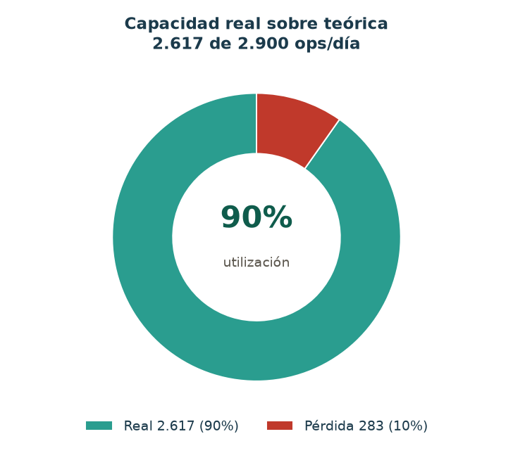
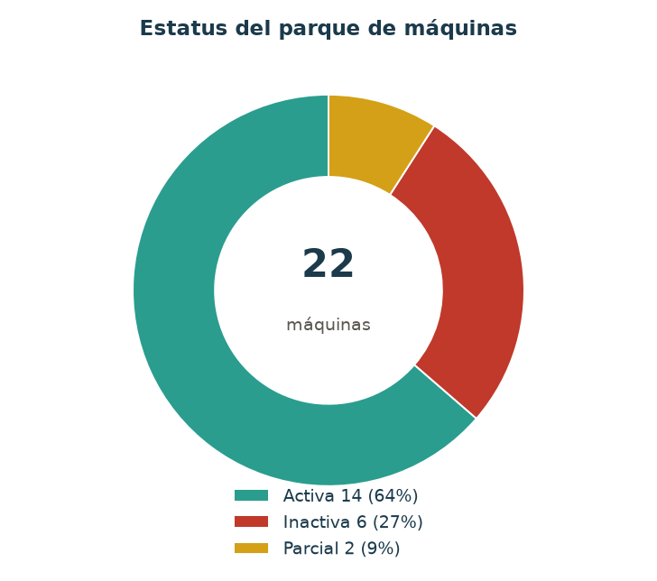
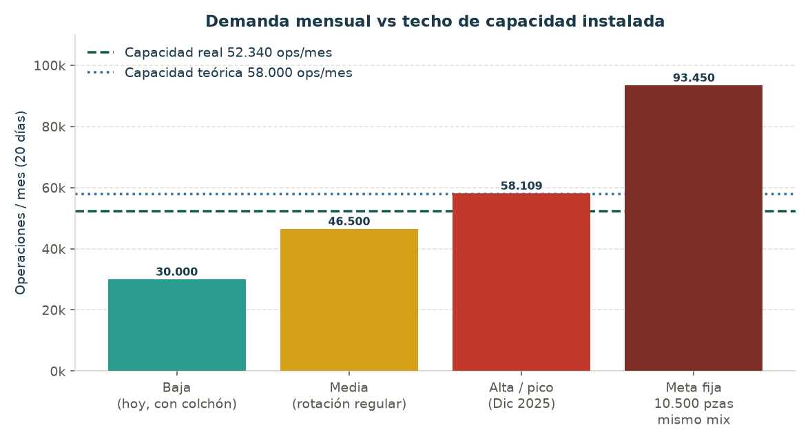
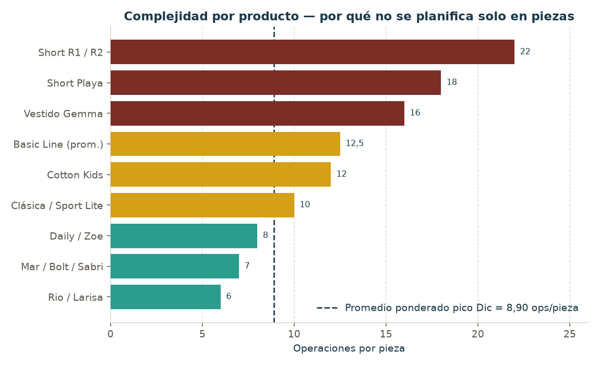
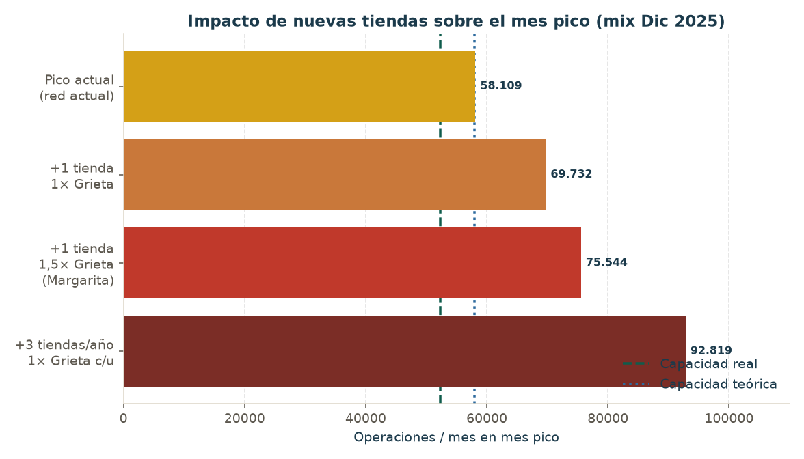

Borrador para decisión. Énfasis en capacidad teórica vs real, calidad de costura, pico octubre–diciembre y apertura de tiendas.
No abrir con “hay que comprar máquinas”. Abrir con tres hechos que ya están medidos, y una decisión en dos fases.
Tono: Operaciones y Taller ya coinciden en el problema; discrepan en la unidad (piezas vs operaciones). Este informe usa operaciones como unidad de capacidad y traduce a piezas solo con el mix declarado (8,90 ops/pieza). Eso resuelve el debate de Valentina vs Antonio sin restarle razón a ninguno.
| Fase | Qué se pide aprobar ahora | Qué no se pide aún |
|---|---|---|
| Fase 1 — Recuperar el techo | Mandato de compra/recuperación de collareteras de ruedo (2, evaluar 3ª) y overlock de L2; kit de piezas Jack para las 3 máquinas paradas; definir 2 operarios o no reactivar Overlock de cuellos. | Un monto: falta cotización. |
| Fase 2 — Crecer con la marca | Autorizar cotizar módulos Jack de 5 máquinas/línea (piloto en L3) + ojaladora/presilladora/engomadora según mix de Línea 5. Presentar ROI en 2–3 semanas con los P0 de la lista de faltantes. | Aprobar el capex de módulos sin SAM de máquinas nuevas ni % de reproceso. |
Cuadro no está pidiendo máquinas “por si acaso”. La red física ya opera Cerro Verde, La Grieta, Sambil Chacao, Sambil Valencia y Grand Plaz, con Tolón y La Vela en distinto grado de madurez, más Web, Pedidos y Corporativo. Los dashboards de reabastecimiento modelan Margarita como tienda nueva (1× a 2× la velocidad de La Grieta, según colección). La instrucción de este informe: 1 tienda confirmada este año y objetivo de 3 tiendas nuevas por año.
Eso cambia la pregunta. No es “¿alcanza el taller para el run-rate de hoy?”. Es “¿alcanza el taller para el octubre–diciembre de una red más grande, con el mix real (shorts de 18 ops, basic de 12,5, rio de 6)?”.
No llegó al expediente un tablero de meta vs real 2025–2026 (piezas, ops, OTIF a tienda). Lo que sí está medido permite afirmar esto, con honestidad:
Si la directiva tiene metas internas de unidades o de fill-rate a tienda, hay que pegarlas aquí. Sin ese dato, “incumplimiento” se sostiene por imposibilidad física en pico, no por un KPI de plan vs real.
La justificación no es solo volumen. Brayan Machado (Coordinador de Producción) documentó el 2-sep-2026 por qué el parque actual daña la prenda, sobre todo en Microfibra, BioFlow y fitness:
Máquinas nuevas (transporte diferencial de precisión, servo, corte y succión, remate automático, ancho de recubierto constante) sacan la prenda lista a control de calidad en el mismo turno. Brayan lo plantea como estándar que hoy no tiene la competencia en Venezuela. Valentina lo pidió explícitamente como segundo criterio de la compra, al mismo nivel que el techo de piezas.
Hueco declarado por el propio Taller: no hay % de reproceso ni minutos en mesa de remate. La calidad está cualitativamente cerrada; el ROI de calidad está abierto.
Ver 2.2. En números: capacidad real 5.881 piezas/mes al mix pico vs 6.529 vendidas en Dic-2025. Déficit de 648 piezas en el mes que más importa para caja y para tienda. Con 1 tienda nueva 1× Grieta el déficit de pico pasa a ~1.950 piezas. Con 3 tiendas/año, a ~4.600 piezas en el pico — cada temporada alta.
No hay tasa. Lo que hay es el mecanismo: ondas, ruedos, hilo, aceite, cortes. Cada uno genera o retrabajo, o segunda, o devolución. Además hay una operación fantasma (limpieza de hilo) que come horas de gente y no aparece en el 90% de utilización. Tratar el 90% como “el taller está bien aprovechado” es incorrecto: parte del tiempo ni siquiera está en el denominador.

| Línea | Teórica | Real | Pérdida | Utilización | Cuello |
|---|---|---|---|---|---|
| Línea 1 | 676 | 676 | 0 | 100% | Ninguno. Patrón de referencia. |
| Línea 2 | 676 | 638 | 38 | 94% | Overlock Unión/Montaje al 80% (188→150). |
| Línea 3 | 774 | 627 | 147 | 81% | Ruedo 1 al 50% + Ruedo 2 inactivo. 52% de la pérdida total. |
| Línea 4 | 774 | 676 | 98 | 87% | Ruedo 2 inactivo (98→0). |
| Total L1–L4 | 2.900 | 2.617 | 283 | 90% |
En Clásica Algodón el estudio de tiempos (Angel De Benedictis) muestra otro cuello, de método: montaje de rib a 80 piezas/día (SAM 02:48), con el mismo operador cargando además unión de hombros y el rib (SAM de esa op. incompleto, #DIV/0!). Recubrir cuello tiene 196 piezas de holgura. Comprar solo collareteras no mueve el techo de ese modelo.
Una prenda típica de polo/camiseta pide 2 ops de overlock (unión + cierre) y 2 de collaret (recubrir + ruedo). Capacidades de diseño: overlock ~188–196, recubrir 194, ruedo 98. El ruedo nace a la mitad. L3 y L4 intentaron balancear con un segundo collaret de ruedo (teórica 774 vs 676). Esos segundos equipos están inactivos, así que L3/L4 tienen overlock de línea grande y ruedo de línea chica. WIP entre estaciones, gente parada, promesa de 774 que nunca se cumple.
Encima: 2 rectas operativas para 4 líneas. No entran al KPI de 2.900, pero cuando el modelo las exige las cuatro líneas hacen cola. Esa espera no está en el 90%.
Línea 5 existe en el Excel y en el conteo de 22 máquinas, y no existe como capacidad:
| Máquina | Capacidad | Estatus | Por qué importa |
|---|---|---|---|
| Recta (×2) | s/d | s/d | Las 2 rectas compartidas con L1–L4. |
| Overlock (×2) | s/d | s/d | Desborde / ops especiales. |
| Doble aguja | s/d | s/d | Pretina, costura paralela. |
| Ojaladora | s/d | s/d | Shorts, pants, chaquetas. |
| Presilladora | s/d | s/d | Refuerzos de estrés. |
| Engomadora | s/d | s/d | Elástico / pretina. |
El 2.900 es el techo del flujo Overlock+Collaret. Explore Pants, Short Playa, Jacket 2.0 y cualquier prenda con ojal o pretina no caben en ese número — y dos de esos modelos ni siquiera tienen ops por pieza cargadas. Planificar la marca con el 2.900 como si fuera “el taller” subestima el problema en los productos que más operaciones comen.



Traducción mensual (×20 días, criterio ya usado con la Gerencia de Operaciones):
| Ops / mes | Piezas al mix pico (8,90) | |
|---|---|---|
| Teórica | 58.000 | 6.517 |
| Real | 52.340 | 5.881 |
| Pérdida de estatus | 5.660 | 636 |
| Overlock de cuellos inactivos (fuera del 2.900) | 7.840 teóricas en 0 | ~881 si se activaran |
Tres máquinas adicionales esperan piezas: Brayan estima ~40 piezas/día (~800/mes). Puede solaparse con las inactivas del tablero; no se suma a ciegas al −283. Sí documenta el déficit tecnológico: downtime de meses por repuesto.

| Escenario | Ops/mes | vs real 52.340 | Lectura |
|---|---|---|---|
| Baja (hoy, con colchón) | 25.000–35.000 | Cubre | El inventario tapa el hueco de máquinas. |
| Media / rotación regular | 45.000–48.000 | Límite | Casi todo el techo real. Cualquier falla = quiebre de SKU. |
| Alta temporada | 54.950–58.109 | No cubre | Dic-2025 = 58.109 ops / 6.529 pzas. |
| Meta plana 10.500 pzas, mismo mix | ~93.450 | Quiebre | El número “en piezas” miente si el mix es el de diciembre. |

90% de utilización de un techo ya recortado no es eficiencia: es saturación. Líneas desbalanceadas, rectas compartidas, limpieza de hilo no medida, Overlock de cuellos parados por gente. El indicador de operatividad ID (otro frente del equipo) y este tablero hay que leerlos juntos: máquina “activa” en el conteo de 22 no significa que aporte al 2.900 (Línea 5).
Cada mes con 27% del parque inactivo el activo se come solo. Sin plan de venta/recuperación, la directiva financia máquinas nuevas y conserva chatarra. La propuesta incluye un inventario de activos (marca, año, valor en libros) y un lote de salida.
No es antigüedad en abstracto. Es: diferencial que ya no transporta tela elástica; sin servo; sin corte de hilo; lubricación sucia; marca sin piezas en el país. El layout objetivo (5 máquinas por línea, módulo autónomo, prenda sale terminada) no se puede armar con 2 máquinas de flujo + 2 rectas para todo el piso.
Marca recomendada por Taller: Jack, por presencia y piezas en Venezuela. No es capricho de marca: hay 3 máquinas fuera esperando piezas y ~40 pzas/día perdidas.
| Fase | Ítem | Cant. indicativa | Efecto |
|---|---|---|---|
| 1 | Collaretera de ruedo | 2 (evaluar 3ª por L3 al 50%) | Hasta +245 ops/día. El grueso del −283. |
| 1 | Overlock Unión/Montaje (L2) | 1 reemplazo | +38 ops/día. |
| 1 | Rectas | 2 (1 por línea, hoy 2 para 4) | No mueve el 2.900; sí el lead time de modelos con recta. |
| 1 | Kit de piezas Jack + reactivar 3 paradas | 1 kit | Hasta ~800 pzas/mes si las 3 vuelven. |
| 2 | Módulo 5 máquinas/línea (piloto L3) | 1 línea completa | Calidad + flujo + sin mesa de remate. SAM nuevos pendientes. |
| 2 | Ojaladora / presilladora / engomadora | según mix L5 | Hace planificable shorts/pants/jacket. |
No comprar Overlock de cuellos adicionales hasta tener 2 operarios. Hoy hay 392 ops/día teóricas en cero por gente, no por falta de hierro.
Lote candidato: 6 inactivas del tablero + las que Fase 1 reemplace. Pasos: inventario (marca, modelo, año, serie, libros, estado), canibalizar lo que Jack no cubra, vender el resto, abatir capex. Sin este paso el taller se llena de equipos que no cose y sí ocupan metro y mantenimiento.
Fase 1: L3 y L4 dejan de ser el tapón de ruedo; desaparece la cola entre overlock sano y collaret muerto. Fase 2: se eliminan mesas de remate y la operación fantasma de limpieza de hilo; el ciclo de la prenda cabe en un turno. Rectas por línea: se acaba la pelea de 4 líneas por 2 cabezales.
Hoy una meta en piezas es inalcanzable o holgada según el mix. Con techo real restaurado a 58.000 ops y mix declarado, planificación puede decir: “este mes el mix da 6.500 piezas, no 10.500”. Eso es lo que Valentina pidió: techo real, techo con máquinas nuevas, y tiempo de respuesta. El segundo techo (máquinas nuevas) falta porque no hay SAM de Jack ni cotización — por eso Fase 2 no se aprueba en esta sesión, se cotiza.

| Escenario de red | Ops pico | vs real 52.340 | Brecha piezas mix |
|---|---|---|---|
| Red actual (Dic-2025) | 58.109 | 111% | 648 |
| +1 tienda 1× Grieta | 69.732 | 133% | 1.954 |
| +1 tienda 1,5× Grieta (varios modelos de Margarita) | 75.544 | 144% | 2.607 |
| +1 tienda 2× Grieta (techo Bags/Sport Lite) | 81.356 | 155% | 3.260 |
| +3 tiendas/año 1× Grieta c/u | 92.978 | 178% | 4.566 |
Ancla: Grieta ≈ 20% del pico de la red (Rio, Short Playa, Bags, Sport Lite). No es un forecast de Comercial. Si Margarita es 2× Grieta, usar la fila 2×. Si Cerro Verde cierra, restar su volumen antes de sumar la tienda nueva.
Fase 1 alinea el taller con esta red. Fase 2 es la que acompaña 3 tiendas/año. Aprobar solo Fase 1 y abrir 3 tiendas es repetir este informe en 12 meses, con más stockout.
Los dashboards de producto confirman el patrón, no solo el correo de Dic-25. Ejemplos: Short Playa 470 en diciembre vs 192 en noviembre; Sport Mesh 295 vs 104; Rio 819 vs 277; Bags 2.500 vs 957. El pico no es un rumor: es 1,5× a 2,5× el mes anterior según colección. Planificar capacidad al promedio anual garantiza quiebre en Q4.
El canal existe en los dashboards (a veces en negativo por ajustes). No hay volumen, ventana ni mix. Un corporativo de shorts o de un color claro (aceite) pega dos veces: ops y calidad. Hay que meterlo en el mismo techo, no “encima”. Dato P1 para Comercial.
Spots arranca con poco histórico. Explore Pants y Jacket 2.0 ya venden en volumen de pico (627 y 775 en Dic-25) y no tienen n.º de operaciones en la tabla que usó Operaciones para las 58.109. Si se cosen en este taller, el pico está subestimado en varios miles de ops. Si se van a satélite, hay que decirlo y sacarles el cupo interno.
Mencionado en el encargo; sin lista, sin %, sin SLA. Riesgo dual: duplicar capex en lo que ya se tercia, o asumir que el satélite absorberá el pico y que no pueda. Pedir a Operaciones el mix satélite vs interno antes de dimensionar Fase 2.
Dos “piezas” distintas, las dos rotas:
Este borrador es suficiente para aprobar el diagnóstico y la Fase 1 en concepto. No es suficiente para un capex cerrado. Prioridad:
| Pri. | Dato | Para qué |
|---|---|---|
| P0 | Cotización Jack por tipo + flete, instalación, capacitación | Monto y payback |
| P0 | % reproceso y % segundas 3–6 meses, por defecto | Dolarizar calidad |
| P0 | Minutos/prenda en mesa de remate y limpieza de hilo | WIP y ciclo |
| P0 | Ops/pieza de Explore, Jacket, Active Duo, y lista satélite | Pico real |
| P1 | Forecast de tiendas (cuál, cuándo, × Grieta o und) | Pasar de escenario a presupuesto |
| P1 | SAM del rib (#DIV/0!) y SAM de modelos top además de Clásica | Techo por producto |
| P1 | Capacidad real de Línea 5 y de las 2 rectas activas | Shorts/pants/jacket |
| P1 | Meta vs real 2025–26, OTIF, quiebres de stock | Inequívoco “incumplimiento” |
| P1 | Corporativos: volumen, ventana, mix | Carga no retail |
| P2 | Inventario de activos, hora-taller, margen/pieza, headcount vs 5/línea, lead time de piezas, SLA satélite | ROI fino y no duplicar capex |
Dueños naturales: Brayan (parque, calidad, Jack), Antonio (ops por producto, satélite), Angel De Benedictis (SAM), Valentina/Comercial (tiendas y corporativos), Finanzas (margen y libros), RR.HH. (operarios de Overlock de cuellos).
anexos/figuras) — las del cuerpo.anexos/dashboards) — fuente de los 2.900 / 2.617 / 283 / 90% y de las observaciones de rectas y Overlock de cuellos.Documento borrador. No sustituye cotización ni acta de inversión. Cifras de capacidad diaria verificadas contra el Excel de líneas (676+676+774+774=2.900; 676+638+627+676=2.617). Mensual = ×20 días, igual que el correo a Valentina.